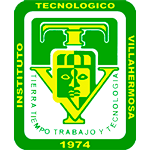

Educación
Tecnologico nacional de México Campus Villahermosa

Termine mis estudios de nivel Superior en el Tecnologico nacional de México Campus Villahermosa cursando la carrera de Ingenieria en Sistemas Computacionales.
Centro de Bachillerato Tecnologico Industrial y de Servicios 163
Termine mis estudios de nivel Media-Superior en el Centro de Bachillerato Tecnologico Industrial y de Servicios 163 llevando dentro de mis años cursados la carrera de informatica.
Secundaria Tecnica No. 5

Termine mis estudios de nivel Medio en la Secundaria Técnica No.5 llevando dentro de mis años cursados la carrera de Computación.